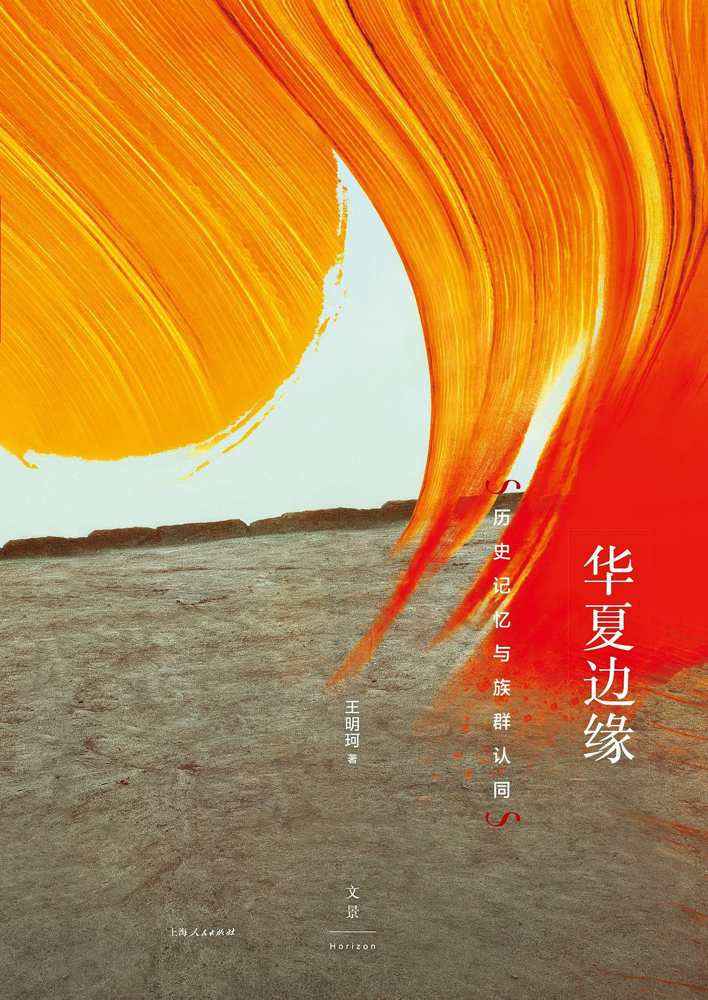
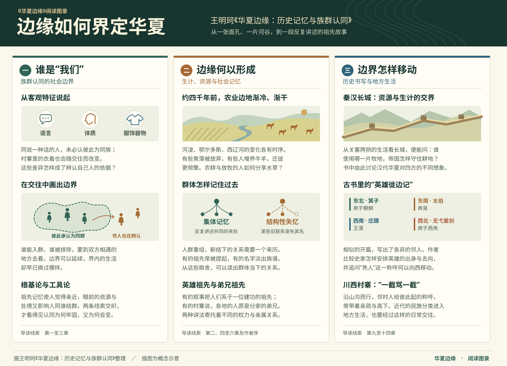
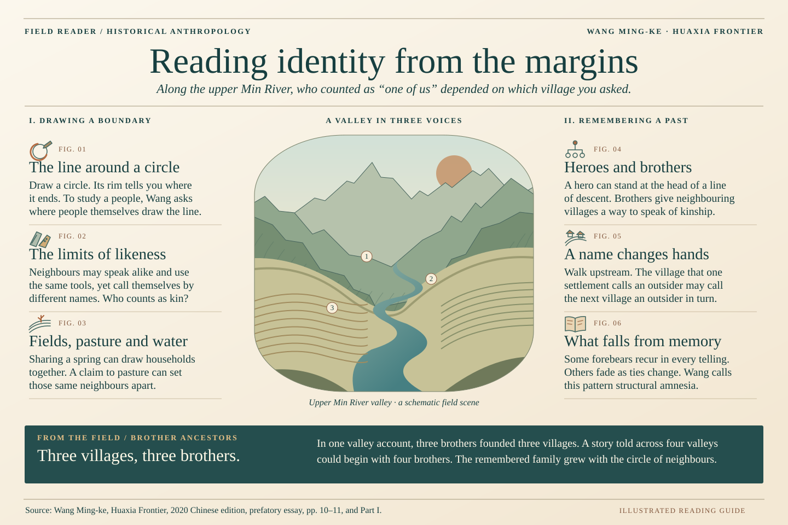

一条山沟里有三个寨子。问起祖先，人们说：从前有三个弟兄来到这里，各自建了一个寨子。
若把来往密切的四条山沟一起算进来，故事又可以从四个弟兄讲起。
人们今天同谁来往，也影响他们怎样讲述共同的过去。
带着这个问题 · 读概念八章

全网经核验的讲座与解读（2026-11 数据）。
| 平台 | 内容 | 频道 | 热度 | 直达 |
|---|
这条思想的谱系上，考古学教我们追问知识如何成形，边界理论把认同安放在“线”上，集体记忆说记忆活在社会的框架里——华夏不是一份固定的名单，而是一道随资源竞争、记忆与失忆不断移动的边界。读懂边缘，才读懂“什么是中国人”。
两张主题图，把书中的范式之争与认同之变收进一方画面。


全书结构化作一张活的地图：理论框架、生态边界、历史形成、现代变迁、研究方法——悬停任意节点，追溯它通向“华夏边缘”的路径。中英双语随语言切换。
与本书同构的 3D 隐喻——发光的内核是“华夏”，青铜巨环是“边缘”，环绕的碎片是被记起与被遗忘的记忆，双碉楼矗立在羌族田野的边缘。以下工程从空场景开始逐块搭建，全程可复现。


当代华语世界最具范式意义的历史人类学经典之一
《华夏边缘》至今没有任何官方外译本。一项面向英语世界的首次全文翻译工程正在进行——让“边缘”的方法，抵达汉语之外。